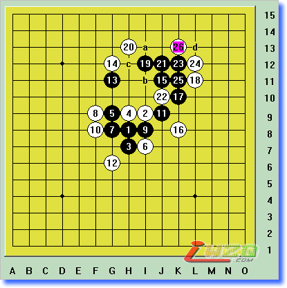
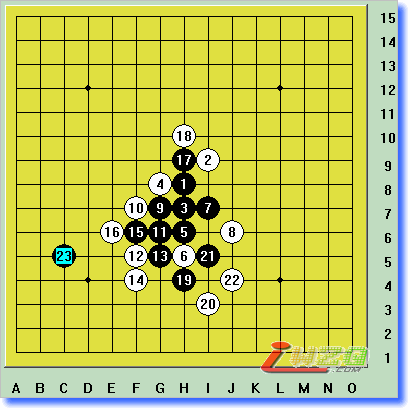

土土讲开局-银月开局
#1 土土讲开局-银月开局 作者：有志青年 发表时间：2008-1-8 16:23:58
感谢网友smyjo发来《土土讲开局银月、恒星整理版》的邮件，原先的文本棋谱已全替换为图片形式。并附了lib互动棋谱。
本讲银月Lib棋谱.rar：
 银月Lib棋谱.rar
银月Lib棋谱.rar图示为斜指银月开局，白棋以下的防点有A～G（本栏目将仅考虑较强的攻防手段，白棋过于“荒诞”的防点请大家自行研究），其中A点是最强防点，银月开局也曾是职业用开局，但由于后来研究表明黑优势依然太大，才渐渐退出职业舞台。
总图
白棋第4手防在总图A点，黑5必然，白6继续防守，黑7是眼见的强手，做了三个活二，黑11是常用的攻防兼备的好手（以后会常见到），至黑13已成必胜之型。以下白14若走a，黑b做棋进攻，白14如防c，黑d是妙手。
图A1
白第12手改走活三反击，黑13简明，以下必然，此后黑走a、b、c胜（不可在 b双杀，白可走a反击！）；右图中，白18改为先冲四再挡左边也无济于事，如不冲四则黑走 18、22、d也四三胜。
图A2
（在彭建国的《开局指南》中图206指出黑1走白2，白在5防，以下至黑27手成一子四杀！ 我认为不如本走法简明）
白第8手改走f9，强防！黑15、17好手，至黑27在a、b双杀止
图A3
白第14手（图A3）外止，黑15妙手，以下至白24，黑走a、b一子双杀；白16若走18防，黑走21、c、d，以下白怎么防，黑都是VCF（比较麻烦，摆摆看）；白16走17防在图A5中讲述。
图A4
在图A4中指出白16若走J8，黑可走成下图胜，下面白怎么挡这个活三，黑都是VCF胜，要是早点用milon的程序多好，我也不用那么麻烦地把每个挡点都研究一遍了。
图A4补
#2 Re:土土讲开局-银月开局 作者：有志青年 发表时间：2008-1-8 16:28:16
白第16手走K8，黑21要点，以下至白26，黑走a、b四三胜；白22若挡上面，黑有VCF，白24若走c，黑走d活三后连攻胜
图A5

黑第9手还可走I6处（推荐的简明走法），白10走H6最强，至白18后黑a一子双杀，白10若走b，黑走c就与图A1一样了；右图，白12走I8右止活三，同样进攻下去黑a一子双杀，可见黑棋有多种取胜之道。
图A6
白第6手变化走G7，黑7仍走要点G8，白8无奈，黑11是冷静的好手，以下黑a活三胜定。白16在上方挡则黑b，白10若在下方挡则黑c，均必胜。
图A7 
从前几图看，只要黑第7手走在G8处则攻势强劲，故白6抢占此点，黑7、9、11的走法很常用，白10若走在15挡则黑走a。黑15做a、b双杀是妙手！白16是唯一招，但至谱二黑依然连攻胜。
图A8
在图A8中曾指出白10在E7挡，黑也可获胜，这里就明示给大家。黑17是常用的做杀妙手，黑19再做杀，至谱2黑23手四三胜。白12若走黑19，黑简单地走在a点是以静制动的好手。
图A8补
#3 Re:土土讲开局-银月开局 作者：有志青年 发表时间：2008-1-8 16:33:42
对白4的挡法，黑5也是可行的，以下的攻防将在松月中讲解。（按黑1－白4－黑3－白2的走子顺序则成松月开局）
图A9
白4挡总图B点，黑采用梅花阵进攻，19手后胜定
图B1
前图白6变招，白8走黑9就和图A7一样了（转个方向看看），白12反挡则黑走15
图B2 
白6又变招，依然是19手双杀止，其中白10走a，则黑走11、第2谱H9也依然胜
图B3
白第6手再变，此点最强！黑9是要点，黑13更是绝妙的一手，至谱2黑25一子双杀止，白24若反挡，上面无VCF！谱1白14若走a或b，黑走H5胜定，白14若走C，黑走H5就和图A1一样了
图B4
前图白第10手变化，但至黑19妙手后，白无应手
图B5
白第10手改变挡点，黑13做杀好手，白14最强，黑以下连攻胜，白16不能挡下方，否则黑走16后可双杀胜
图B6
前图白14穿心防守，白16先跳四再防也是好顺序，否则黑走I11、E6就双杀了，虽然看似黑棋有禁手的烦恼，但黑棋连冲后依然胜，白22挡a黑在下方VCF胜
图B7
白第10手变换挡点，黑采用11、13、15、17这样常见的攻击手段很有效，25手后VCF胜。此外白第10手若走a点，黑简单地走在J7处是好手
图B8
#4 Re:土土讲开局-银月开局 作者：有志青年 发表时间：2008-1-8 16:36:54
白第4手改走总图C点，黑5依然走G8点团成三角，以下11手后还原成图A1了！若下图白6走a，就转换成图B系列攻防了；黑5走a也可，将在下讲恒星篇中提及(总谱1、4、A、2、3之序)
图C1
白第4手走G8也是强防。白8最强，黑11团要点，白12最强，至黑23一子双杀绝妙止！
图D1

白第6手变招，白10、16要点，黑15保留眠三单防是正着。黑17做棋妙手，以下黑必胜。白18若走a，黑走b做杀，此外总谱黑5还可走c点成云月必胜型(1、2、C、4、3之序)
图D2
白第4手走总图E点防，黑只需走下图黑1就还原成图C了，没什么可说的。
图E1
白第4手走总图F点防，黑5走成三角强劲，至黑9后成必胜型。白6若走A点，黑走F7可连攻胜。黑5也可走H9，比较复杂，云月里会介绍。
图F1
白第6手变招，黑只需连续进攻就可获胜，看来白第4手在F点防不强。
图F2
白第4手防守在总图G点，黑有多种进攻办法。下图黑5是比较职业的，17手后双杀止。白6如走H6，黑7走I5成必胜型(右谱)，黑1的这种手法将在云月篇里再次隆重出场。
图G1
#5 Re:土土讲开局-银月开局 作者：有志青年 发表时间：2008-1-8 16:38:52
书中指出，白A点防守时黑第5手走I8必败，我就给大家简单摆摆看，黑7左挡，黑9若走J7就被白简单逼禁手了，以下必然(其实白可四三胜的，但逼禁手多爽呀!)
必败图1 
黑7换个方向，黑13若走a，白14走b，和反攻倒算图7手法是一样的。白22后可逼黑c点四四禁手，黑17若走c，白d双杀。黑9若走白6上一点，白可在12成角进攻。
必败图2
终于把我比较得意的《银月篇》讲完了，还真有点成就感呢。下面的篇章可能不会有我对银月研究这么系统完满了，以后尽力而为吧。有从头到尾把银月图看完的吗？本栏目采用的是循序渐进，环环相扣的讲法，必须从头到尾仔细的品味才能领会，切忌死记硬背！其实银月黑棋的取胜之道不只是我所讲述的一条，只有理解棋中的内涵，才能做到融会贯通，并将这种技巧运用到其它陌生的局面中。这里我再在给大家叮嘱几点：
1：要掌握做杀的技巧，这在银月篇里已经得到充分的体现，留四不冲的要领我屡次强调了；
2：黑棋在进攻的同时一定要时刻审视白棋（包括白棋现有的子力和将来的防点），进攻同时要制约住白棋的发展和反攻，关于此点的详述请参阅《替对方想想》一文；
3：这些图基本都是黑白最强或较强的攻防，大家只要掌握这些图的精髓，白棋其它的防守都可迎刃而解的；
4：在本栏目中，白棋防点由A、B渐弱，我将着重分析A、B等强防的情况，其他的弱防都会象银月现在这样给一两个典型图而一笔带过的；
5：请不要从栏目中间看起，我不仅仅在单个开局各图之间互有联系，而且在各种开局之间也会有提及和转换的，这点大家在银月中已经看到；
就讲以上几点，如果我看到或自己研究出双方更好更强的攻防变化，我会再补充进来，这里要强调的是，对于黑棋第5手的另一走点，在此并不讨论，大家可以参考xgtl补充的实战对局。以后结束完本栏目，若有空的话，我可以就几种职业开局的五手两打结合实战再给大家详述。从下一讲开始，我们将共同探讨《恒星篇》(Indirect 3)的攻防。
#6 Re:土土讲开局-银月开局 作者：不怕孤单 发表时间：2008-1-8 16:43:48
终于看到完整版了，谢谢有志
#7 Re:土土讲开局-银月开局 作者：gerbo 发表时间：2008-1-8 19:25:39
 很受用，但这个棋盘看起来不是那么舒服，感谢ＬＺ及作者
很受用，但这个棋盘看起来不是那么舒服，感谢ＬＺ及作者
#8 Re:Re:土土讲开局-银月开局 作者：有志青年 发表时间：2008-1-8 22:04:09
引用：
原文由 gerbo 发表于 2008-1-8 19:25:39 :
现在由文字棋谱改成截图棋谱，舒服了吧
#9 Re:土土讲开局-银月开局 作者：松痕 发表时间：2008-1-22 13:18:51
留三不冲，不是留四不冲．